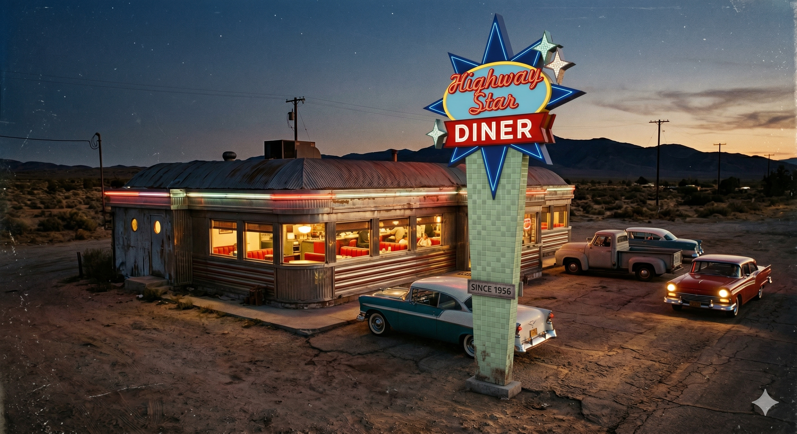

Our History

THE LEGEND OF THE ROAD ハイウェイの伝説
The Beginning (1956) 始まり（1956年）
In the summer of 1956, a small neon sign lit up the dark desert sky along Route 66. It was the birth of HIGHWAY STAR DINER. Founded by a passionate local driver who loved rock 'n' roll and good food, the diner quickly became a legendary oasis for weary travelers and classic car enthusiasts. 1956年の夏、ルート66沿いの暗い砂漠の空に、小さなネオンサインが灯りました。それがハイウェイスター・ダイナーの誕生です。ロックンロールと美味い飯を愛した地元の熱いドライバーによって創業者されたこのダイナーは、すぐに疲れ果てた旅人やクラシックカー好きが集まる伝説のオアシスとなりました。
70 Years of Rock 'n' Roll ロックンロールの70年
Decades have passed, cars have changed, and the world has moved fast—but inside these walls, time stands still. For 70 years, we have kept the chrome shining, the jukebox numbers cool, and our original recipes untouched. We aren't just a restaurant; we are a living piece of American highway history. 何十年もの歳月が流れ、車は変わり、世界はハイスピードで動いていきました。しかしこの店の中だけは、時間が止まっています。70年間、私たちはクロームの輝きを、ジュークボックスのクールなナンバーを、創業当時のレシピを保ち守り続けてきました。ここはただの飲食店ではありません。アメリカのハイウェイの歴史そのものなのです。
To the Next Generation 次の世代へ
As we celebrate our 70th anniversary this year, we want to thank every driver who has ever pulled into our parking lot. Whether you are a regular local or a traveler from across the world, we are always open all night to welcome you home. 今年、70周年を迎えるにあたり、私たちの駐車場に車を寄せてくれたすべてのドライバーに感謝を捧げます。地元の常連さんも、世界中からやってくる旅人も、私たちはあなたを「おかえり」と迎えるために、今夜も一晩中灯りをともして待っています。